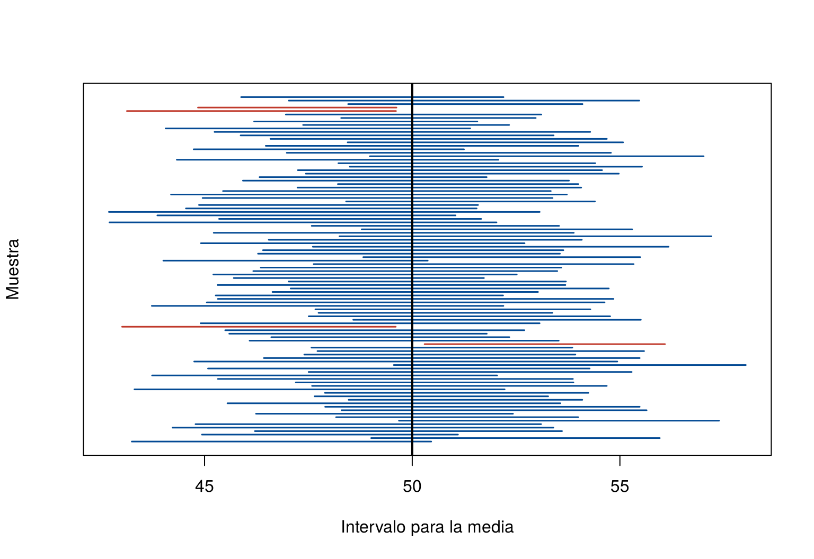

Decir que el tiempo promedio de entrega de un restaurante es de 9.8 minutos da un solo número, una estimación puntual, pero no dice qué tan confiable es. Si se hubiera tomado otra muestra, el resultado habría sido distinto. Un intervalo de confianza acompaña la estimación con un margen de error: “entre 7.5 y 12.1 minutos, con 95 % de confianza”.
Esta página explica qué significa ese “95 %” y cómo construir intervalos para la media, la proporción y la varianza de una población, y cómo calcular el tamaño de muestra necesario. Los bloques de código se ejecutan en orden.
La mayoría de los intervalos de confianza tienen la misma forma:
\[ \text{estimación} \;\pm\; \underbrace{\text{valor crítico} \times \text{error estándar}}_{\text{margen de error}} \]
| Nivel de confianza | Valor crítico de la normal, \(z\) |
|---|---|
| 90 % | 1.645 |
| 95 % | 1.960 |
| 99 % | 2.576 |
round(qnorm(c(0.95, 0.975, 0.995)), 3) # deja 5 %, 2.5 % y 0.5 % en cada cola[1] 1.645 1.960 2.576El 95 % no es la probabilidad de que el parámetro esté en un intervalo ya calculado: el parámetro es fijo y el intervalo ya está calculado, así que lo contiene o no lo contiene. El 95 % describe el método: si se tomaran muchas muestras y con cada una se construyera un intervalo, cerca del 95 % de esos intervalos contendría el verdadero valor del parámetro.
La simulación lo muestra. Se toman 100 muestras de 20 datos de una población normal con media \(\mu = 50\), y con cada una se construye un intervalo del 95 % para la media:
set.seed(2026)
intervalos <- t(replicate(100, t.test(rnorm(20, mean = 50, sd = 8))$conf.int))
contiene <- intervalos[, 1] <= 50 & intervalos[, 2] >= 50
sum(contiene) # cuántos de los 100 intervalos contienen a 50[1] 96plot(NULL, xlim = range(intervalos), ylim = c(1, 100), yaxt = "n",
xlab = "Intervalo para la media", ylab = "Muestra")
segments(intervalos[, 1], 1:100, intervalos[, 2], 1:100, lwd = 1.5,
col = ifelse(contiene, "#034A94", "#C0392B"))
abline(v = 50, lwd = 2)
Intervalos del 95 % para la media, calculados con 100 muestras distintas de la misma población. La línea negra es la media verdadera, 50. Los intervalos rojos no la contienen.
En esta simulación, 96 de los 100 intervalos contienen la media verdadera. Con otra simulación podrían ser 94 o 97: el nivel de confianza se fija antes, y la proporción observada varía alrededor de él.
Cuando no se conoce \(\sigma\), que es lo habitual, se usa la desviación estándar de la muestra y el valor crítico de la t de Student con \(n - 1\) grados de libertad:
\[ \bar{x} \;\pm\; t_{n-1} \times \frac{s}{\sqrt{n}} \]
El intervalo es exacto si la población es normal. Si no lo es, sigue siendo una buena aproximación cuando la muestra es grande, gracias al teorema del límite central. Con muestras pequeñas conviene revisar los datos con un gráfico Q-Q.
Se registró el tiempo de entrega, en minutos, de 10 domicilios de un restaurante:
tiempos <- c(11.1, 15.6, 11.1, 7.5, 7.9, 14.7, 6.3, 8.5, 8.0, 7.6)
n <- length(tiempos)
media <- mean(tiempos)
ee <- sd(tiempos) / sqrt(n) # error estándar estimado
t_crit <- qt(0.975, df = n - 1) # valor crítico para 95 %
c(media = media, error_estandar = ee, t_critico = t_crit) media error_estandar t_critico
9.830000 1.010726 2.262157 media + c(-1, 1) * t_crit * ee # intervalo de confianza del 95 %[1] 7.543579 12.116421La función t.test() hace el mismo cálculo. El argumento
conf.level cambia el nivel de confianza:
t.test(tiempos)$conf.int # 95 %[1] 7.543579 12.116421
attr(,"conf.level")
[1] 0.95t.test(tiempos, conf.level = 0.90)$conf.int # 90 %: más angosto[1] 7.977225 11.682775
attr(,"conf.level")
[1] 0.9Interpretación: con 95 % de confianza, el tiempo promedio de entrega del restaurante está entre 7.5 y 12.1 minutos. El intervalo es ancho porque la muestra es pequeña y los tiempos varían bastante.
Para una proporción, con \(\hat{p}\) la proporción muestral, el intervalo más sencillo, llamado intervalo de Wald, es
\[ \hat{p} \;\pm\; z \times \sqrt{\frac{\hat{p}\,(1 - \hat{p})}{n}} \]
Funciona bien si hay al menos 10 éxitos y 10 fracasos en la muestra: \(n\hat{p} \geq 10\) y \(n(1 - \hat{p}) \geq 10\).
Ejemplo. En una encuesta a 200 clientes elegidos al azar, 152 dicen estar satisfechos:
p_hat <- 152 / 200
ee_p <- sqrt(p_hat * (1 - p_hat) / 200)
p_hat + c(-1, 1) * 1.96 * ee_p # intervalo de Wald del 95 %[1] 0.7008093 0.8191907Con 95 % de confianza, entre el 70.1 % y el 81.9 % de los clientes está satisfecho.
La función prop.test() de R da un
intervalo un poco distinto, porque usa otro método, el intervalo
de Wilson, con una corrección por continuidad. Es más confiable
que el de Wald cuando la muestra es pequeña o la proporción está cerca
de 0 o de 1:
prop.test(152, 200)$conf.int[1] 0.6936108 0.8161811
attr(,"conf.level")
[1] 0.95Si la población es normal, la distribución chi-cuadrado de Distribución muestral da el intervalo para la varianza:
\[ \left(\frac{(n - 1)\,s^2}{\chi^2_{0.975,\;n-1}},\; \frac{(n - 1)\,s^2}{\chi^2_{0.025,\;n-1}}\right) \]
donde \(\chi^2_{0.975,\,n-1}\) es el
cuantil que deja 97.5 % a la izquierda,
qchisq(0.975, n - 1). Como la chi-cuadrado no es simétrica,
el intervalo no es “estimación ± margen”.
Ejemplo. Se midió la eficiencia de combustible, en millas por galón, de 7 camiones:
mpg <- c(7.69, 4.97, 4.56, 6.49, 4.34, 6.24, 4.45)
s2 <- var(mpg)
s2[1] 1.654695c(6 * s2 / qchisq(0.975, df = 6), 6 * s2 / qchisq(0.025, df = 6))[1] 0.6871004 8.0237747Con 95 % de confianza, la varianza de la eficiencia está entre 0.69 y 8.02. El intervalo es muy ancho porque solo hay 7 datos. Además, este intervalo depende mucho del supuesto de normalidad: si los datos son asimétricos, su nivel de confianza real puede ser bastante menor que 95 %.
Antes de recoger los datos se puede decidir cuál es el margen de error \(E\) aceptable y despejar \(n\):
| Parámetro | Tamaño de muestra |
|---|---|
| Media | \(n = \left(\dfrac{z\,\sigma}{E}\right)^2\) |
| Proporción | \(n = \dfrac{z^2\, p\,(1 - p)}{E^2}\) |
Para la media hay que tener una idea de \(\sigma\), por ejemplo de un estudio anterior. Para la proporción, si no se tiene idea de \(p\), se usa \(p = 0.5\), que da el \(n\) más grande. El resultado se redondea hacia arriba.
ceiling((1.96 * 0.5 / 0.05)^2) # proporción, margen de 5 puntos[1] 385ceiling((1.96 * 0.5 / 0.03)^2) # proporción, margen de 3 puntos[1] 1068ceiling((1.96 * 3.5 / 1)^2) # media, sigma cercana a 3.5 minutos y margen de 1 minuto[1] 48Para estimar una proporción con un margen de 5 puntos porcentuales se necesitan 385 personas; para reducir el margen a 3 puntos, 1 068. Reducir el margen a la mitad exige cuatro veces más datos.
Para estimadores sin fórmula, como la mediana, se usa la distribución bootstrap de la página Bootstrap. El intervalo percentil toma los percentiles 2.5 y 97.5 de las estimaciones bootstrap:
set.seed(2026)
llamadas <- rexp(100, rate = 1/5)
set.seed(2026)
medianas_boot <- replicate(5000, median(sample(llamadas, replace = TRUE)))
median(llamadas)[1] 4.040946quantile(medianas_boot, c(0.025, 0.975)) # intervalo percentil del 95 % para la mediana 2.5% 97.5%
2.406427 5.315704 Con 95 % de confianza, la mediana de la duración de las llamadas está entre 2.4 y 5.3 minutos. Existen versiones más precisas del intervalo bootstrap, pero el percentil es suficiente para empezar y funciona bien con muestras moderadas.
| Problema | Causa | Solución |
|---|---|---|
| “Hay 95 % de probabilidad de que \(\mu\) esté en este intervalo” | El 95 % describe el método, no un intervalo ya calculado | “Con 95 % de confianza, \(\mu\) está entre…” |
| “El 95 % de los datos está en el intervalo” | El intervalo es para el parámetro, no para los datos | El intervalo para la media es mucho más angosto que el rango de los datos |
| Usar \(z\) en lugar de \(t\) con muestras pequeñas | Se ignoró que \(\sigma\) se estimó | Usar qt() o t.test() |
| Creer que la t solo sirve si \(n < 30\) | Es una regla práctica, no una condición | Con \(\sigma\) desconocida, la t es la opción correcta para cualquier \(n\) |
| Usar el intervalo de la varianza con datos asimétricos | El intervalo depende mucho de la normalidad | Revisar con un gráfico Q-Q o usar bootstrap |
| Aplicar estos intervalos a datos que no son independientes | Por ejemplo, precios diarios de una acción | Los datos en el tiempo requieren otros métodos |
Las notas de 12 estudiantes en un examen fueron 3.2, 4.1, 3.8, 2.9, 4.5, 3.6, 3.9, 4.0, 3.3, 3.7, 4.2 y 3.5. Construya un intervalo del 95 % para la nota media del curso e interprételo.
notas <- c(3.2, 4.1, 3.8, 2.9, 4.5, 3.6, 3.9, 4.0, 3.3, 3.7, 4.2, 3.5)
mean(notas)[1] 3.725t.test(notas)$conf.int[1] 3.435575 4.014425
attr(,"conf.level")
[1] 0.95Con 95 % de confianza, la nota media del curso está entre 3.44 y 4.01.
Una encuesta a 1 200 personas encuentra que 516 apoyan una propuesta. Calcule el intervalo de Wald del 95 % para la proporción y su margen de error.
p_r2 <- 516 / 1200
margen <- 1.96 * sqrt(p_r2 * (1 - p_r2) / 1200)
c(p_hat = p_r2, margen = margen) p_hat margen
0.43000000 0.02801155 p_r2 + c(-1, 1) * margen[1] 0.4019885 0.4580115La proporción estimada es 43 %, con un margen de error de 2.8 puntos: el intervalo va de 40.2 % a 45.8 %.
Una empresa quiere estimar el tiempo medio de atención telefónica con un margen de error de 30 segundos y 95 % de confianza. Por un estudio anterior se sabe que la desviación estándar es cercana a 4 minutos. ¿Cuántas llamadas debe revisar?
Con \(E = 0.5\) minutos y \(\sigma = 4\) minutos:
ceiling((1.96 * 4 / 0.5)^2)[1] 246Debe revisar 246 llamadas.
Última revisión: 7 de noviembre de 2026.